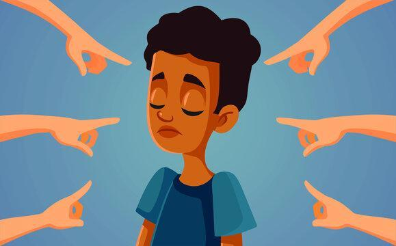

En pocas palabras, se logra la sinergia cuando dos o más personas trabajan conjuntamente para crear una mejor solución de lo que ambos pudieran lograr por cuenta propia. No es tu forma o la mía, sino una mejor forma, una más elevada.
Solos podemos hacer muy poco: juntos podemos hacer mucho.
En la naturaleza, la sinergia está en todas partes. Los grandes árboles secoya (que alcanzan 100 metros de altura o más) crecen en conjuntos, y comparten una vasta disposición de raíces entre: lazadas. Sin contar el uno con el otro, bastar1a con una tormenta para que cayeran.
Muchos animales y plantas viven juntos en relaciones simbióticas. Si alguna vez viste una fotografía de un pequeño pájaro que se alimenta en el lomo de un rinoceronte, entonces ya viste sinergia en acción. Todos se benefician: el pájaro se alimenta y el rinoceronte queda limpio.
La sinergia no es algo nuevo. Si alguna vez estuviste en algún equipo, ya la sentiste. Si alguna vez trabajaste en grupo sobre un proyecto que finalmente se logró, o que fue muy divertido para todos, ya la sentiste.
La sinergia no es algo que simplemente sucede. Es un proceso. Es necesario llegar a ese punto. Y el fundamento para llegar hasta allá es el siguiente: aprender a celebrar las diferencias.
Nunca olvidaré cuando me topé en la prepara tona con un nativo de
Tonga llamado Fini Unga. En un principio, me aterraba. Quiero decir
que este tipo tenía el cuerpo de un tanque, su aspecto era feroz y era conocido como peleador callejero. Nos veíamos, vestíamos, hablábamos,
pensábamos y comíamos distinto (deberías ver lo que este tipo
comía). Lo único que teníamos en común era el futbol. ¿Cómo fue posible
que llegáramos a ser los mejores amigos? Tal vez porque éramos tan
distintos. Nunca podía saber lo que Fini pensaba o qué haría inmediatamente,
y eso era muy refrescante. Yo disfrutaba especialmente ser su
amigo cuando se iniciaba alguna pelea. Tenía fortalezas de las que yo carecía, y yo
contaba con fortalezas que no había en él, por lo que juntos formábamos un gran equipo.
Cómo me alegro que el mundo no está lleno de réplicas genéticas que actúan y piensan exactamente como yo. Gracias a Dios por la diversidad. Cuando oímos la palabra diversidad, por lo común pensamos en diferencias raciales y de sexo. Pero hay mucho más en esto, incluyendo diferencias en rasgos físicos, forma de vestirse, idioma, posición social, familia, creencias religiosas, estilo de vida, educación, intereses, habilidades, edad, carácter general y muchas cosas más. El mundo se está convirtiendo rápidamente en un gran crisol de culturas, razas, religiones e ideas. Puesto que esta diversidad que nos rodea aumenta cada vez más, necesitas tomar una importante decisión en lo que a manejarlo se refiere. Éstas son tres posibles actitudes que puedes tomar:
Los que evitan y temen (a veces le tienen terror) a las diferencias. Les perturba que alguien tenga un color de piel distinto, adore a otro dios, o vista de pantalones de mezclilla que no sean de su marca, porque están convencidos de que su forma de vivir es la "mejor", "correcta" o "única". Disfrutan poniendo en ridículo a quienes son distintos, y mientras tanto creen que ellos están salvando al mundo de alguna terrible plaga. No dudan en pelear físicamente al respecto si es necesario, y con frecuencia se unen a pandillas o antigrupos, ya que en la cantidad hay fuerza.
Los que toleran piensan que todos tienen el derecho a ser distintos. No evitan la diversidad, pero tampoco la adoptan. Su lema es: "Tú por tu cuenta y yo por la mía. Haz lo tuyo y permíteme hacer lo mío. No me molestes, y no te molestaré". Aunque se acercan mucho, nunca llegan a la sinergia porque ven las diferencias como impedimentos, y no como fortalezas potenciales sobre las que pueden formar algo. No saben de qué se están perdiendo.
Los celebradores valoran las diferencias. Las consideran ventajas, y no debilidades. Aprendieron que dos personas que piensan en forma distinta pueden lograr más que dos personas que piensan de forma similar. Se dan cuenta de que celebrar diferencias no significa que necesariamente estemos de acuerdo con las diferencias, como en el caso de demócratas o republicanos, sino que se valoran. Para ellos, Diversidad = Chispas creativas = Oportunidad.
Es mucho más fácil apreciar las diferencias cuando nos damos cuenta de que de uno u otro modo, todos somos una minoría de uno solo. Y deberíamos recordar que la diversidad no sólo es algo externo, sino también interno. En el libro All I Really Need to Know I Learned in Kindergarten [Todo lo que realmente necesito saber lo aprendí en el kinder], Robert Fulghum dice: "Somos tan distintos uno de otro en nuestras mentes, como parecemos serlo en· la parte exterior de nuestras mentes".
¿Cómo diferimos en el interior? Pues...
Aprendemos de modo distinto. Como probablemente ya notaste, el cerebro
de tu amigo o de tu hermana no funcionan como el tuyo. El doctor
Thomas Armstrong identificó siete tipos de inteligencia, y dice que los
jóvenes pueden aprender mejor mediante su inteligencia predominante:
Aunque existen muchos, tres de los principales obstáculos para la sinergia son la ignorancia, las camarillas y los prejuicios.
Ignorancia. La ignorancia significa que no tienes ninguna pista. No sabes qué piensan los demás, qué sienten, o qué es lo que vivieron. La ignorancia abunda cuando se trata de comprender a personas minusválidas
Camarillas. No tiene nada de malo querer estar con quienes te sientes mejor; se convierte en un problema únicamente cuando tu grupo de amigos se hace tan exclusivo que comienzan a rechazar a todo aquel que no sea como ellos. Es difícil valorar diferencias en una camarilla cerrada. Quienes quedan afuera se sienten como ciudadanos de segunda, y quienes están adentro con frecuencia sufren de complejos de superioridad.
Prejuicio. ¿Alguna vez te sentiste estereotipado, etiquetado o prejuzgado por alguien, porque el color de tu piel no es el "correcto", tu acento es demasiado notorio o vives en el barrio equivocado? ¿Acaso no nos pasó a todos, y es un pésimo sentimiento? Aunque todos fuimos creados iguales, desafortunadamente no se nos trata igual a todos. Es triste que las minorías de todo tipo con frecuencia tienen obstáculos adicionales qué salvar en la vida, debido a los prejuicios que tienen tantas personas. El racismo es uno de los problemas más antiguos del mundo.
Estés discutiendo con tus padres por la hora de acostarse que te imponen, o planeando una actividad escolar con tus compañeros, o simplemente cuando no haya ningún acuerdo, existe una forma de llegar a la sinergia. A continuación hay un proceso simple de cinco pasos para ayudarte a llegar:
El sexto hábito nos enseña a trabajar con el todo. Este “todo” es mucho más que las partes, e incluso, más que la suma de dichas partes. Cuando se trabaja con sinergia, la creatividad y las buenas ideas surgen de manera espontánea. Lo que una o pocas personas no logran resolver, el equipo lo saca adelante.
Además de los resultados en sí mismos, y a modo de conclusión, cuando actuamos de forma sinérgica, descubrimos o redefinimos fortalezas y debilidades. Y este ejercicio, siempre nos aporta mucho valor.